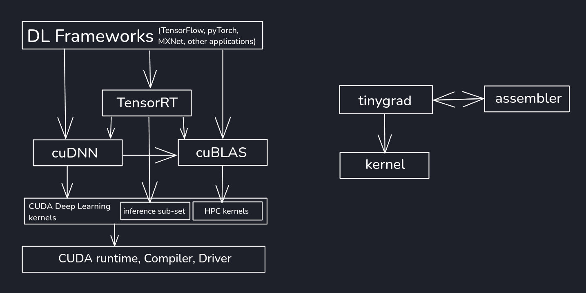

tinygrad documentation¤
Welcome to the docs for tinygrad. This page is for users of the tinygrad library. tinygrad is not 1.0 yet, but it will be soon. The API has been pretty stable for a while.
While you can pip install tinygrad, we encourage you to install from source:
git clone https://github.com/tinygrad/tinygrad.git
cd tinygrad
python3 -m pip install -e .
After you have installed tinygrad, try the MNIST tutorial.
If you are new to tensor libraries, learn how to use them by solving puzzles from tinygrad-tensor-puzzles.
We also have developer docs, and Di Zhu has created a bunch of tutorials to help understand how tinygrad works.
tinygrad Usage¤
The main class you will interact with is Tensor. It functions very similarly to PyTorch, but has a bit more of a functional style. tinygrad supports many datatypes. All operations in tinygrad are lazy, meaning they won't do anything until you realize.
- tinygrad has a built in neural network library with some classes, optimizers, and load/save state management.
- tinygrad has a JIT to make things fast. Decorate your pure function with
TinyJit - tinygrad has amazing support for multiple GPUs, allowing you to shard your Tensors with
Tensor.shard
To understand what training looks like in tinygrad, you should read beautiful_mnist.py
We have a quickstart guide and a showcase
tinygrad Stack¤

Differences from PyTorch¤
If you are migrating from PyTorch, welcome. Most of the API is the same. We hope you will find tinygrad both familiar and somehow more "correct feeling"
tinygrad doesn't have nn.Module¤
There's nothing special about a "Module" class in tinygrad, it's just a normal class. nn.state.get_parameters can be used to recursively search normal classes for valid tensors. Instead of the forward method in PyTorch, tinygrad just uses __call__
tinygrad is functional¤
In tinygrad, you can do x.conv2d(w, b) or x.sparse_categorical_crossentropy(y). We do also have a Conv2D class like PyTorch if you want a place to keep the state, but all stateless operations don't have classes.
tinygrad is lazy¤
When you do a+b in tinygrad, nothing happens. It's not until you realize the Tensor that the computation actually runs.
tinygrad requires @TinyJit to be fast¤
PyTorch spends a lot of development effort to make dispatch very fast. tinygrad doesn't. We have a simple decorator that will replay the kernels used in the decorated function.